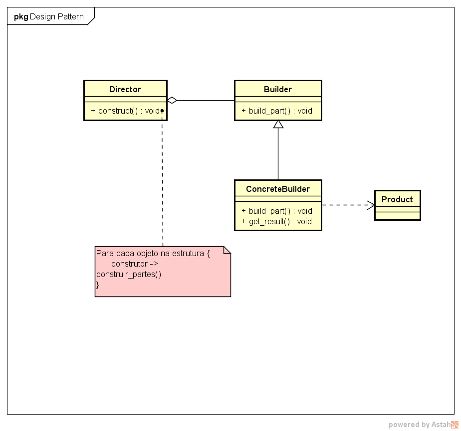

2 - Builder
Descrição do padrão:
O padrão de projeto Builder encapsula a construção de um produto e permite que sua criação seja feita passo-a-passo. Assim, é possível construir objetos compostos a partir dos objetos-parte que o compõem.
UML do padrão:
Descrição do exemplo do livro:
A ideia do exemplo apresentado no livro é [preencher conteúdo]
UML do exemplo do livro: